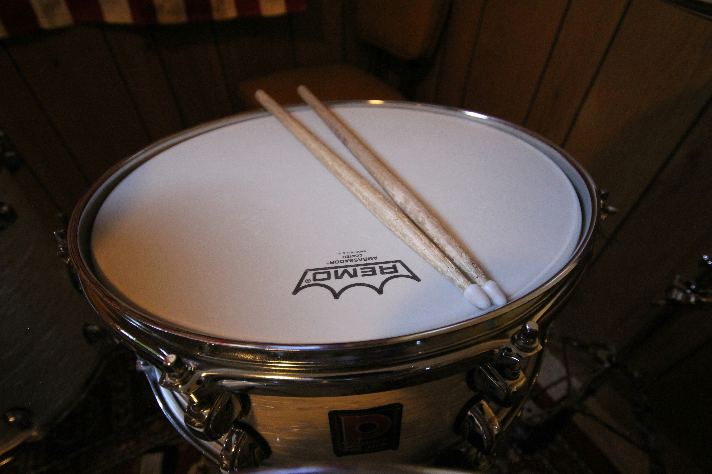

Description:
The snare drum is a percussion instrument known for its sharp, crisp, and energetic sound. It is commonly used in concert bands, marching bands, orchestras, drum lines, and many styles of popular music. The main parts of a snare drum include the drumhead, shell, rim, tension rods, snares, snare strainer, and stand. The metal wires called snares stretch across the bottom drumhead and give the instrument its distinctive buzzing sound.

How to Play the Snare Drum:
The snare drum is played by striking the top drumhead with drumsticks. Different sounds can be created by changing where and how hard the drum is struck. Players also use techniques such as rolls, accents, and rim shots to create different rhythms and effects.